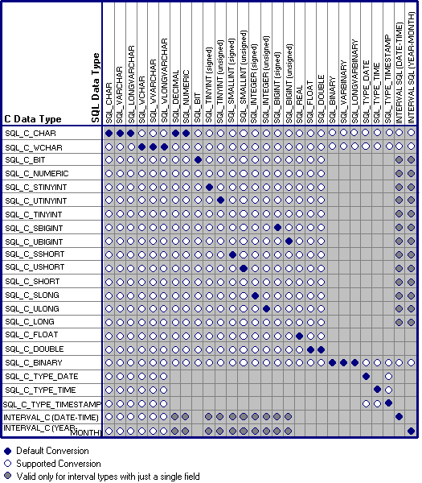

When an application calls SQLExecute or SQLExecDirect, the driver retrieves the data for any parameters bound with SQLBindParameter from storage locations in the application. When an application calls SQLSetPos, the driver retrieves the data for an update or add operation from columns bound with SQLBindCol. For data-at-execution parameters, the application sends the parameter data with SQLPutData. If necessary, the driver converts the data from the data type specified by the ValueType argument in SQLBindParameter to the data type specified by the ParameterType argument in SQLBindParameter, and then sends the data to the data source.
The following table shows the supported conversions from ODBC C data types to ODBC SQL data types. A filled circle indicates the default conversion for an SQL data type (the C data type from which the data will be converted when the value of ValueType or the SQL_DESC_CONCISE_TYPE descriptor field is SQL_C_DEFAULT). A hollow circle indicates a supported conversion.
The format of the converted data is not affected by the Windows country setting.

The tables in the following sections describe how the driver or data source converts data sent to the data source; drivers are required to support conversions from all ODBC C data types to the ODBC SQL data types that they support. For a given ODBC C data type, the first column of the table lists the legal input values of the ParameterType argument in SQLBindParameter. The second column lists the outcomes of a test that the driver performs to determine if it can convert the data. The third column lists the SQLSTATE returned for each outcome by SQLExecDirect, SQLExecute, SQLBulkOperations, SQLSetPos, or SQLPutData. Data is sent to the data source only if SQL_SUCCESS is returned.
If the ParameterType argument in SQLBindParameter contains the identifier of an ODBC SQL data type that is not shown in the table for a given C data type, SQLBindParameter returns SQLSTATE 07006 (Restricted data type attribute violation). If the ParameterType argument contains a driver-specific identifier and the driver does not support the conversion from the specific ODBC C data type to that driver-specific SQL data type, SQLBindParameter returns SQLSTATE HYC00 (Optional feature not implemented).
If the ParameterValuePtr and StrLen_or_IndPtr arguments specified in SQLBindParameter are both null pointers, that function returns SQLSTATE HY009 (Invalid use of null pointer). Though it is not shown in the tables, an application sets the value of the length/indicator buffer pointed to by the StrLen_or_IndPtr argument of SQLBindParameter or the value of the StrLen_or_IndPtr argument of SQLPutData to SQL_NULL_DATA to specify a NULL SQL data value. (The StrLen_or_IndPtr argument corresponds to the SQL_DESC_OCTET_LENGTH_PTR field of the APD.) The application sets these values to SQL_NTS to specify that the value in *ParameterValuePtr in SQLBindParameter or *DataPtr in SQLPutData (pointed to by the SQL_DESC_DATA_PTR field of the APD) is a null-terminated string.
The following terms are used in the tables: